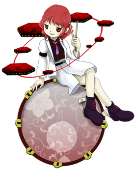
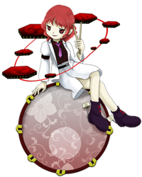

- Welcome to Touhou Wiki!
- Please register to edit. For assistance, check in with our Discord server or IRC channel.
Raiko Horikawa
Raiko Horikawa hoɽʲikawa ɽaiko | |
|---|---|
|
 Raiko Horikawa in Double Dealing Character Phantasmal PercussionistMore Character Titles | |
| Species | |
| Abilities |
Making anything follow a rhythm |
Music Themes | |
| |
Appearances | |
| Official Games | |
| |
| Print Works | |
| |
Raiko Horikawa (堀川 雷鼓 Horikawa Raiko) is a tsukumogami, transformed from a taiko drum. She appears in Double Dealing Character as the Extra Stage boss.
General Information[edit]
Though originally born as a tsukumogami from a taiko drum, Raiko now borrows the "magic energy" of modern drummers from the outside world, which is why she uses a modern-day drumset.
Personality[edit]
In all of Raiko's dialogue, she seems to simply want to be free. She seems laid-back and doesn't think much of stealing magic from the outside world. At the end of the Extra Stage, she makes friends with the main character, so she has no real ill intent, though she insists on keeping her freedom to make some noise during concerts.
Backstory[edit]
Raiko was born from a taiko drum that had become a tsukumogami through age, but because she was frequently used and enjoyed use, she wasn't a vengeful tsukumogami. During the events of Double Dealing Character, Raiko noticed a strange power enter her body and a desire for revenge against those who used her. Despite her ferocity, Raiko soon realized that the new power she felt was from Shinmyoumaru Sukuna's use of the Miracle Mallet and that it would not last forever. Fearing that she would lose her new-found freedom when she ran out of power, she quickly worked to finding a suitable replacement for it.
Taking a rather large risk, she abandoned her old taiko drum for a new drum kit and drummer, cleansing her body of the Miracle Mallet's power and making her self-sufficient while claiming that her new power is from magicians who live in the outside world. She taught this method to the other temporarily empowered tools, such as Benben Tsukumo and Yatsuhashi Tsukumo, ensuring that they would be able to keep their freedom when the Miracle Mallet's power dissipated.
Since then, she has supposedly been working with her fellow tsukumogami to create a paradise for tools to live freely.
Character Design[edit]
Name[edit]
Her surname Horikawa literally means "moat & river". The theme ZUN implies with this is uncertain. There is "The Drum of the Waves of Horikawa" (堀川波鼓), a joururi play composed by Monzaemon Chikamatsu, the theme of which is the husband's "revenge" against his wife and another man in sexual dalliance. It is also probable that according to Otogi-zoushi's "Issunboushi," Horikawa is the surname of Issunboushi, whose offspring was Shinmyoumaru and enpowered Raiko to first take action.
Her given name, Raiko, is made up of the kanji for "thunder" and "drum". The kanji used for "Japanese percussion" (鼓) is also the second kanji in the word "taiko" (太鼓). "Raiko" is a set of percussions carried by Raijin on the back, it is used for "lightning" or "thunder" — the brutal air pressure and sudden loud noise of thunder might remind people of bass drum.
Design[edit]
In Double Dealing Character's official art, Raiko Horikawa is seen with short, wavy red hair, red eyes, and a black shirt with red cross-hatching that is tucked into a short, white skirt. She also wears a small purple tie, and a white sport coat with long sleeves. She has black-purple shoes with red lacing and large drum mallets on the back of them. Raiko is also shown sitting on her magical drums, which are red decorated with white flower patterns. The floor tom is notably detached from the rest of the drum set.
Story[edit]
- Double Dealing Character
- Main articles: Reimu A Arc and Reimu B Arc
When Reimu finds Raiko in the storm, she explains how she was born as a tsukumogami under the Miracle Mallet's power, but managed to change her own power source. She decides to fight Reimu in order to test it out. After being defeated, she explains a little more about the magic behind tsukumogamis (and tools in general), and Reimu, somewhat sympathizing with her plight, says she won't hunt tools and lets her off.
- Main article: Marisa A Arc
Marisa is greatly surprised at the kind of magical expertise Raiko must have to change out her own source of energy. Raiko explains a bit about how it happens, and Marisa lets her go after she promises not to harm humans, and then leaves to fix her own Mini-Hakkero.
- Main article: Marisa B Arc
Marisa attacks Raiko, as her Mini-Hakkero moving on its own has caused her no end of trouble. After Raiko is defeated, Marisa lets her go, insisting that she has no desire for the outside world's magic. Raiko explains that the tool depends on the user: if the user is wicked, then the tool will be, as well. Marisa takes it to heart.
- Main article: Sakuya A Arc
Sakuya approaches Raiko with her blade in hand, to try and get rid of both problems at once. However, Raiko has already changed her power source and is looking to test it out. After being defeated, she notes that the blade seems to like its "suffering", and offers to show Sakuya how to imbue it with more magic power. The maid refuses, though, as she is worried that if the blade became a tsukumogami, it would be far too strong.
- Main article: Sakuya B Arc
When Sakuya meets Raiko in the middle of the storm, the maid offers to remove the magic power and revert her to being a tool. Raiko has other plans, and does battle with Sakuya in order to test her new energy source. After noting that while mere tools can float in and out between Gensokyo and the real world all the time, a tsukumogami might not follow the same rules, Sakuya offers again, and Raiko turns her down.
- Impossible Spell Card
- Main article: Impossible Spell Card: Story
Raiko appeared once again in Impossible Spell Card to confront the on-the-run amanojaku, Seija Kijin. Her goal was to stop Seija from abusing the power of the Miracle Mallet as well as abusing the many tools and items she was using to cheat her way through spell cards.
Relationships[edit]
Benben and Yatsuhashi Tsukumo[edit]
Raiko was the one who told the Tsukumo sisters how to convert their energy source away from the Mallet's power. Not much is said about their relationship otherwise, though, aside from Raiko looking out for people that were the same as her.
Minor Relationships[edit]
After battling the heroine, Raiko almost invariably becomes friendly with her. They promise not to exterminate her and generally to let her be, even when she puts on a live concert.
Spell Cards[edit]
| Name | Translated | Comments | Games | Stage | ||
|---|---|---|---|---|---|---|
| Total: 15 | ||||||
| 一鼓「暴れ宮太鼓」 | First Drum "Raging Temple Taiko" | DDC | St. Ex | |||
| 二鼓「怨霊アヤノツヅミ」 | Second Drum "Vengeful Spirit Aya-no-Tsuzumi" | DDC | St. Ex | |||
| 三鼓「午前零時のスリーストライク」 | Third Drum "Three Strikes at Midnight" | DDC | St. Ex | |||
| 死鼓「ランドパーカス」 | Death Drum "Land Percuss" | DDC | St. Ex | |||
| 五鼓「デンデン太鼓」 | Fifth Drum "Den-Den Daiko" | DDC | St. Ex | |||
| 六鼓「オルタネイトスティッキング」 | Sixth Drum "Alternate Sticking" | DDC | St. Ex | |||
| 七鼓「高速和太鼓ロケット」 | Seventh Drum "High Speed Taiko Rocket" | DDC | St. Ex | |||
| 八鼓「雷神の怒り」 | Eighth Drum "Thunder God's Anger" | DDC | St. Ex | |||
| 「ブルーレディショー」 | "Blue Lady Show" | DDC | St. Ex | |||
| 「プリスティンビート」 | "Pristine Beat" | DDC | St. Ex | |||
| 雷符「怒りのデンデン太鼓」 | Thunder Sign "Den-Den Daiko of Rage" | ISC | St. 5 | |||
| 太鼓「ファンタジックウーファー」 | Taiko "Fantastic Woofer" | ISC | St. 5 | |||
| 輝天符「迅雷のドンドコ太鼓」 | Shining Heaven Sign "Thunderclap Dondoko Daiko" | Co-owner with Iku | VD | Nightmare Thursday - 2 | ||
| 輝神符「謎のドンドコ人だかり」 | Shining Divine Sign "Mysterious Dondoko Crowd" | Co-owner with Mamizou | VD | Nightmare Thursday - 3 | ||
| 輝星符「正体不明のドンドコ太鼓」 | Shining Star Sign "Unidentified Dondoko Daiko" | Co-owner with Nue | VD | Nightmare Thursday - 6 | ||
Additional Information[edit]
- The symbol on the smaller drums is Mitsudomoe. Mitsudomoe are believed to represent the three primary divisions in Shinto, which are "man", "Earth", and "sky", and they are also associated with the lightning god Raijin.
- The hexagonal drum pads are reminiscient of the Simmons SDS-V, the first commercially available electronic drum kit, and popular in the 1980s.
- Raiko's Spell Cards "Blue Lady Show" and "Pristine Beat" shoot danmaku as to follow a rhythm, creating a melody out of it. The shot rate is only slightly slower than the beat rate of her own theme.
Fandom[edit]
Official Profiles[edit]
|  | ○EX面ボス 夢幻のパーカッショニスト 堀川 雷鼓（ほりかわ らいこ） 種族：付喪神
しかし、身体に強い魔力を感じ始めた。 しかし聡明な彼女は、どうやらこれは鬼の魔力（打ち出の小槌の魔力）であると このままでは乗っ取られてしまう、そう感じた。 彼女は大ばくちに出る。 そして、新しいドラムと奏者を手に入れた。
彼女は周りの付喪神にこの方法を教えてまわる事にした。 道具だって自分の意思で楽しみたい！ |
EX Stage Boss - Phantasmal Percussionist Horikawa Raiko Species: Tsukumogami She's a tsukumogami created from a Japanese taiko drum. However, she began to feel a strong, new magical power within her. She was wise, though, and quickly realized that this power She felt that at this rate, she'd be completely taken over by it. She took a big gamble. Thus, she obtained a new drum kit, and a new drummer as well.
She taught this method to the other tsukumogami around her. Even if we're tools, we want to have fun of our own will! |
Official Sources[edit]
- 2013/08/12 Double Dealing Character - Extra Stage dialogue; omake.txt (official profile)
| This page is part of Project Characters, a Touhou Wiki project that aims to write proper descriptions for all official characters of Touhou Project. Please keep the character page guidelines in mind when contributing. |